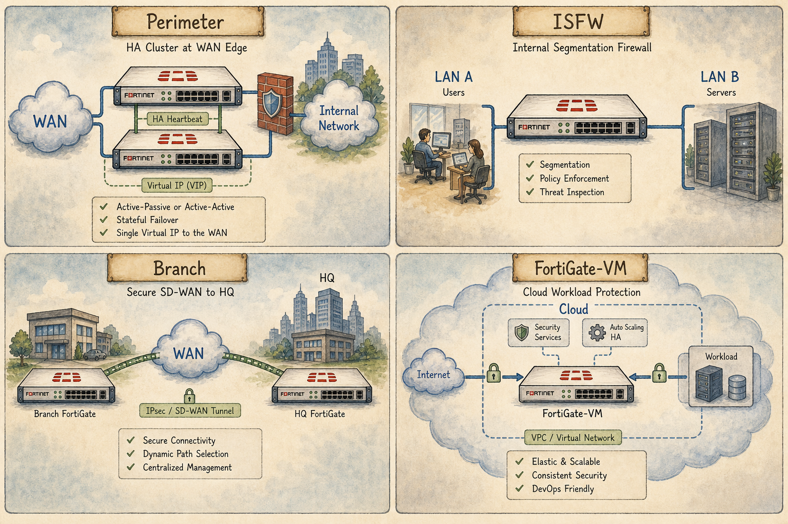

Where We Are in the NSE7 Journey

Four quadrants showing a FortiGate in each canonical role.
Where does a FortiGate actually live? Edge, datacenter, branch, cloud — each placement changes which features matter, which SKU you buy, and which oncall page wakes up first.
The Problem We're Solving Today
The blueprint expects you to design, not just configure. Knowing the four canonical placements lets you answer 'which model and which features?' for any scenario the exam describes.
Key Concepts
- Edge / perimeter FortiGate (NGFW at the WAN boundary)
- Internal segmentation FortiGate (ISFW between LAN zones)
- Data centre FortiGate (high throughput, NPU-heavy)
- Branch FortiGate (SD-WAN, often SoC-class)
- Cloud FortiGate-VM (BYOL vs PAYG, SDN connectors)
Ready to Begin the Session
| Official NSE7 EF Blueprint Objectives |
|
| Prerequisites | Session 02: FortiOS 7.6 — Architecture Overview |
| Estimated Duration | 25 minutes |
| Phase | Phase 1 — Foundations: Network Security Architecture |
Session 03 — Enterprise Deployment Patterns Where we are in the NSE7 journey: Where does a FortiGate actually live? Edge, datacenter, branch, cloud — each placement changes which features matter, which SKU you buy, and which oncall page wakes up first. The problem we're solving today: The blueprint expects you to design, not just configure. Knowing the four canonical placements lets you answer 'which model and which features?' for any scenario the exam describes. Session goal: Given an enterprise diagram, label every FortiGate by deployment role and justify which features each one needs. Key concepts: • Edge / perimeter FortiGate (NGFW at the WAN boundary) • Internal segmentation FortiGate (ISFW between LAN zones) • Data centre FortiGate (high throughput, NPU-heavy) • Branch FortiGate (SD-WAN, often SoC-class) • Cloud FortiGate-VM (BYOL vs PAYG, SDN connectors)
What We Discovered Together
Parsed from the persistent session summary produced at the end of the Socratic investigation. Use it to rebuild context before a review or a lab.
Session Information
Session Number: 03
Topic: Enterprise Deployment Patterns
Date: July 2026
Certification: Fortinet NSE7 Enterprise Firewall 7.6
Story Progress
Setting: Vaultline Financial — Wednesday morning, two weeks after the trading floor incident.
The VDOM proposal from Session 02 impressed the board. Priya's stock rose, and so did the student's as consultant. But success brought bigger problems: Vaultline is acquiring Meridian Wealth, a smaller advisory firm with twelve small regional branch offices (10-30 staff each). At the same time, the CTO signed off on migrating the customer-facing portal into Azure, and the HQ datacenter firewall is due for a refresh.
Priya presented a reseller's quote: fifteen units of the same mid-range FortiGate model — HQ edge, datacenter refresh, twelve Meridian branches, plus a spare. The reseller's justification was standardisation for support and sparing. Priya's instinct told her something was wrong but she could not articulate what. She asked the consultant (the student) to sanity-check before taking the quote to finance.
Through Socratic reasoning, the student uncovered that the quote fails in both directions — waste at the small branches, inadequacy at the datacenter — because it treats fifteen different jobs as one problem. The student was walked through the derivation of all five canonical deployment roles.
Characters continued: Priya (Head of Network Security). The reseller (unnamed) is a new bit-part character representing the "one-SKU-fits-all" thinking the exam expects candidates to reject.
Cliffhanger: The consultant now owes Priya a re-quoted design. The natural next chapters could go into FortiGate SKU families and model differentiation, or into a deep-dive on SD-WAN now that we've established why branches need it. The Vaultline VDOM implementation (from Session 02) is also still open.
Concepts Learned
1. Deployment Role Determines Everything
The most important mental shift in this session: a FortiGate's role in the network determines its silicon, its inspection mode, and its SKU category. You cannot standardise across roles because the roles have architecturally incompatible requirements.
2. Branch FortiGate
Defining characteristic: SD-WAN across unequal WAN links. The branch's dominant workload is per-application intelligent steering across fibre, 4G, ADSL — not raw throughput. Small user population (10-50 staff) means modest bandwidth. SoC4/SP5 silicon (integrated NP+CP) is exactly right for the scale. Inspection typically flow-based. SoC-class devices must never be positioned as VPN hubs — Session 39 warning reinforced.
3. Datacenter FortiGate
Defining characteristic: throughput at line rate. Dominant traffic is east-west machine-to-machine (market data feeds, database replication, storage). Multiple discrete NP7s in parallel (three or six on the board, each handling a subset of interfaces) plus discrete CP9 for crypto. Inspection is flow-only — proxy mode is architecturally excluded at datacenter scale because it kills NP7 offload and CPU-bounds every session on the policy.
4. Edge / Perimeter FortiGate
Defining characteristic: outbound user inspection with SSL/TLS deep inspection. 95% of the risk at an internet edge lives in outbound flows (users clicking bad links, malware calling home, encrypted C2). The user population is small enough (hundreds to low thousands) that proxy mode's CPU cost is affordable — and features like advanced DLP and category quotas are proxy-only anyway. Silicon priority is the CP9 for TLS decryption at scale, with balanced NP7 for baseline throughput.
5. Cloud FortiGate-VM
Defining characteristic: no silicon at all — everything runs on vCPUs. No NP7, no CP9, no crypto engines. This forced Fortinet to invent two things: vCPU-based licensing (BYOL vs PAYG) and SDN Connectors.
BYOL: fixed licence entitling the VM to X vCPUs, enforced by FortiOS regardless of hypervisor VM size. Best for long-lived, predictable production. Portable across clouds.
PAYG: marketplace image billed hourly through the cloud provider. Best for POC, bursty, or short-lived workloads. Rental car vs outright purchase.
SDN Connectors: poll the cloud provider's management API (Azure, AWS, GCP, NSX, Kubernetes) and translate cloud-native metadata (tags, resource groups) into dynamic firewall address objects. Enables policies that survive infrastructure change without edits.
6. Internal Segmentation FortiGate (ISFW)
Defining characteristic: east-west policy enforcement inside the LAN, between internal security zones. Never faces the internet. Justified by three reasons: (1) performance isolation from edge inspection workload; (2) failure isolation via independent failure domains; (3) administrative boundary between the internet security team and the internal segmentation team. Often deployed in transparent mode for insertion without renumbering. Transparent mode flagged as a future dedicated session.
My Understanding
Strong Areas:
- Immediately identified the reseller's core flaw: treating locations as interchangeable
- Correctly reasoned that overspending at small branches AND underspeccing at the datacenter are both real failures of standardisation
- Correctly identified the datacenter's throughput requirement as tied to NP7 chips
- Correctly named SD-WAN as the industry term for intelligent WAN steering
- Correctly connected FortiGate-VM to the absence of specialised hardware
- Correctly derived all three reasons for a dedicated ISFW (performance isolation, failure isolation, administrative boundary)
- Correctly reasoned that BYOL wins for long-lived workloads
Initial Struggles:
- Initially described the NP7/flow-mode datacenter as "less security" — a common misconception that was corrected mid-session
- Named the SD-WAN concept as "application steering" — close, needed one more nudge toward the industry term
- Initially named "security profiles and deep inspection" as the edge's job without fully articulating the outbound direction
Misconceptions Corrected:
- Flow mode with NP7 offload is NOT "less security" — it still runs full L7 inspection via NTurbo → IPS engine → CP9 → NTurbo → NP7. The chain was recalled correctly on prompting.
- The edge firewall's real workload is OUTBOUND user traffic, not primarily inbound protection. This is a critical mental model shift and the student made it clearly once prompted.
Moments of Strong Reasoning:
- Naming both directional failures of the reseller's quote (waste AND inadequacy) in a single answer
- Recalling the NTurbo → CP9 chain correctly from Session 39 under pressure
- Independently deriving all three justifications for a dedicated ISFW rather than just naming "segmentation"
- Final synthesis to Priya: "The resellers quote doesn't take into account the purposes of each of the firewalls deployment location within the network." Cleanly articulated the architectural error.
Troubleshooting Experience
This session was design-focused rather than fault-focused. However, several implicit troubleshooting reference points were reinforced:
- The Session 39 trading floor incident was referenced as the archetype of what happens when proxy mode meets datacenter throughput. Serves as a permanent mental anchor for "why proxy is off the table at the datacenter."
- The Session 02 VDOM split-architecture was referenced as the smaller-scale answer to the same performance-isolation problem an ISFW solves at the physical scale.
Key design-troubleshooting lessons:
- When a scenario asks "which model?" always trace back workload → silicon → SKU category.
- When a scenario describes a big HQ box, distinguish edge (outbound + proxy-capable) from datacenter (east-west + flow-only). This is the #1 trap.
- When a scenario mentions cloud tags or dynamic resource discovery, the answer is SDN Connectors.
- When a scenario mentions long-lived vs bursty workloads in cloud, the answer is BYOL vs PAYG.
Connections
Previous Sessions:
- Session 01: established that NSE7 is a composition exam testing architectural reasoning. Session 03 delivers directly on that — the entire session is architectural.
- Session 02: the VDOM proposal at Vaultline directly foreshadows both the ISFW discussion and the trading VDOM's flow-only requirement (datacenter workload archetype).
- Session 39: the NP7/CP9/NTurbo/IPSA chain was recalled and reinforced. The SoC4-as-branch-only rule was directly reinforced.
- Session 40: session offload verdicts (from the trading floor incident) underpin why proxy mode is unacceptable at the datacenter.
Future Topics:
- SD-WAN deep dive (branch role has established the need)
- FortiGate SKU families and model differentiation (natural follow-on to the "which SKU?" question)
- Transparent mode (flagged as needed for full ISFW deployment coverage)
- HA clustering (edge and datacenter both mandate it)
- FortiManager central management across mixed-role estates (foreshadowed in Session 01)
- Security Fabric across heterogeneous fleets
Important Takeaways
1. Five canonical FortiGate deployment roles: Edge, Datacenter, Branch, ISFW, Cloud VM. Each is defined by workload, not by size.
2. Edge and datacenter are the #1 exam trap. Both are "big HQ boxes" on a diagram. Read for TRAFFIC DIRECTION (outbound user vs east-west server) and INSPECTION MODE (proxy-capable vs flow-only). Edge = CP9-heavy for TLS decrypt. Datacenter = multi-NP7 for throughput.
3. SoC-class devices (SoC4, SP5) are branch devices. Never position them as VPN hubs. This reinforces Session 39.
4. BYOL vs PAYG: rental car versus outright purchase. Long-lived production = BYOL. Bursty/dev/POC = PAYG.
5. SDN Connectors are what make a cloud FortiGate genuinely cloud-native rather than "a VM that happens to run in the cloud." They translate cloud metadata (tags, resource groups) into dynamic firewall address objects.
6. ISFW justification is three-fold: performance isolation, failure isolation, administrative boundary. Never reduce it to just "segmentation" on the exam.
7. Reason from workload → silicon → SKU. This is the consultant's mental process, and it's also the exam's.
Future Session Notes
Concepts Requiring Reinforcement:
- Edge vs datacenter distinction — needs a scenario-based drill with several ambiguous cases in a future spaced-repetition prompt
- BYOL vs PAYG — likely to appear on the exam as a workload-duration scenario rather than a definition question
- SDN Connector mechanics — the specific set of supported clouds (Azure, AWS, GCP, NSX, Kubernetes) is worth locking in
- ISFW three-fold justification — recall practice needed to prevent regression to just "segmentation"
Spaced Repetition Recommendations:
- In 1 session: present a mixed-scenario diagram and ask the student to label each FortiGate by role and justify silicon
- In 2 sessions: present a cloud licensing scenario with workload duration mixed in
- In 3 sessions: present an edge-vs-datacenter ambiguous scenario to test resistance to the trap
- In 4 sessions: return to Session 39's SoC-as-hub warning in a fresh context
Story Elements to Continue:
- Priya awaits the re-quoted design — natural setup for the next session
- Meridian Wealth acquisition creates twelve new branches to deploy — SD-WAN, IPsec/ADVPN, FortiManager templates all natural next steps
- The Azure customer portal migration is scoped but not deployed — natural setup for cloud FortiGate deep-dive
- The junior engineer character from Sessions 02/39 could return with another well-intentioned mistake (perhaps around cloud licensing?)
- Marcus (NOC) has been quiet since Session 39 — good vehicle for a fresh troubleshooting scenario
Natural Opportunities for Future NSE7 Topics:
- FortiGate SKU families (F-series, G-series, VM-series) as a natural follow-on
- SD-WAN fundamentals (now that we've established branch need)
- FortiGate-VM in Azure — actual deployment, SDN Connector configuration
- Transparent mode (needed to complete ISFW coverage)
- IPsec / ADVPN — twelve Meridian branches connecting back to HQ is a ready-made ADVPN scenario
- FortiManager for mixed-role estates — how do you push different policy packages to edge, datacenter, and branch devices?
Audio Podcast Prompt (The Packet Path)
Generate an audio podcast episode of "The Packet Path" — an intelligent, conversational, true-crime-documentary-style podcast for network engineers.
Hosts: Alex (experienced network security consultant) and Sam (smart, curious co-host asking clarifying questions).
Episode title: "The Fifteen-of-One Quote"
Story: A mid-sized financial services firm called Vaultline Financial is acquiring a smaller advisory firm. The head of network security is handed a reseller's quote proposing to standardise the entire estate on fifteen units of the same mid-range FortiGate — HQ edge, datacenter refresh, twelve regional branches, plus a spare. The reseller's argument is standardisation for support and sparing. On paper, tidy. In practice, catastrophic in both directions.
Alex walks Sam through the investigation. What does a small branch office in a regional town actually need its firewall to do all day? What does a datacenter box carrying 60 Gbps of market data feeds actually need? Are those two problems the same problem sized differently, or are they architecturally different problems?
Cover in the episode:
- The five canonical deployment roles: branch, datacenter, edge, cloud VM, ISFW
- Why branches are defined by SD-WAN, not throughput
- Why datacenters cannot tolerate proxy mode (referencing Session 02's trading floor incident)
- Why the edge is really about outbound user inspection, not inbound protection — and why that makes the CP9 the star chip
- Why a FortiGate-VM in Azure has no silicon at all, and how BYOL vs PAYG solves the cloud-scaling problem
- Why SDN Connectors exist and what they do
- Why an ISFW is not just a segmentation VDOM in a bigger box — it's about performance isolation, failure isolation, and administrative boundary
Tone: intelligent, curious, structured. Sam should ask the questions listeners would ask. Alex should reason out loud rather than lecture. Include one clear "aha" moment where Sam realises the reseller's quote fails in BOTH directions (waste AND inadequacy) — not just one. End with the consultant's final message to the head of security: fifteen locations are not fifteen instances of one problem.
Duration target: 22-28 minutes.
Guides, Bites & Nibbles
Additional resources sorted to this session — deeper guides, focused explainers, and quick-reference cards.